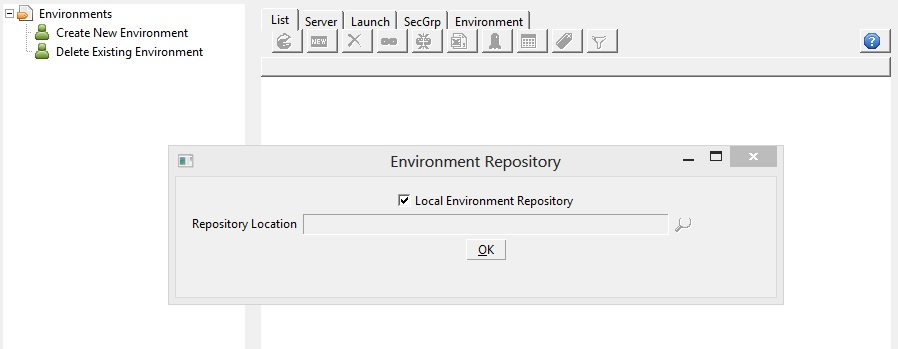

Cloud Foundry
Cloud Foundry is an open source cloud computing platform as a service (PaaS) software developed by VMware released under the terms of the Apache License 2.0.
It is primarily written in Ruby. The source and development community for this software is available at cloudfoundry.org.
VMWare run a hosted version at cloudfoundry.com and there are several other hosted suppliers.
Core Concepts
App
This is the basic unit of Cloud Foundry and can be considered as a container to run your application code.Service
Services such as Databases, Message systems are used by Apps. Cloud Foundry comes with a number of default services and it is possible to register additional services with Cloud Foundry.Setup Cloud Foundry Account
If you are using VMWare Cloud Foundry go to http://www.cloudfoundry.com/ and press the Signup for Cloud Foundry button and enter your details:
You will receive your login details in an email that will be used to setup your environment.
Create an Environment
Run EC2Dream by running ec2dream in a command prompt.1. The very first time EC2Dream is run it prompts for the location of the repository. Take the default local repository.

Then an initial screen is displayed:

2. Click in the tree
3. Select the Cloud Foundry tab and enter an environment name, your Cloud Foundry user and password, and change the URL if your environment is not api.cloudfoundry.com.
Create an App
1. Click on App in the tree to create a blank Launch Profile2. Enter:
App Name: test
and press Save Icon
3. Press Launch Icon
4. Hit the refresh Icon and you will see the App in STOPPED status
Upload an Application and Start App
1. Get a sample war fileDownload a sample WAR from http://content.hccfl.edu/pollock/ajava/war/myServletWAR.war
For details See http://content.hccfl.edu/pollock/ajava/war/myservletwar.htm
2. Upload to App
Click on the App in the tree and in the Server tab press the Upload Icon . Select the war file.
and press Upload button.
3. Start the App. In the Server tab press the Start Icon
Hit the refresh Icon and you will see the App go to STARTED status
4. Test App. In a browswer go to http://xxxxxx.cloudfoundry.com
Create a Service and Bind to App
1. Select Services from the tree.2. Press the New Icon and Select a System Service.
3. Specify a Service Name and press Create Button.
4. Click on the App in the tree and press the New Icon next to Services and select a system service.
5. Press the Bind Button to bind service to App.
6. You can also specify a service in the Launch of an App.
Update instances in an App
Instances can be updated by changing the Instances value and pressing Update Icon
Delete an App
Stop the App by pressing the Stop IconDelete a Service
Services can be terminate by pressing the Delete Icon in the Service View